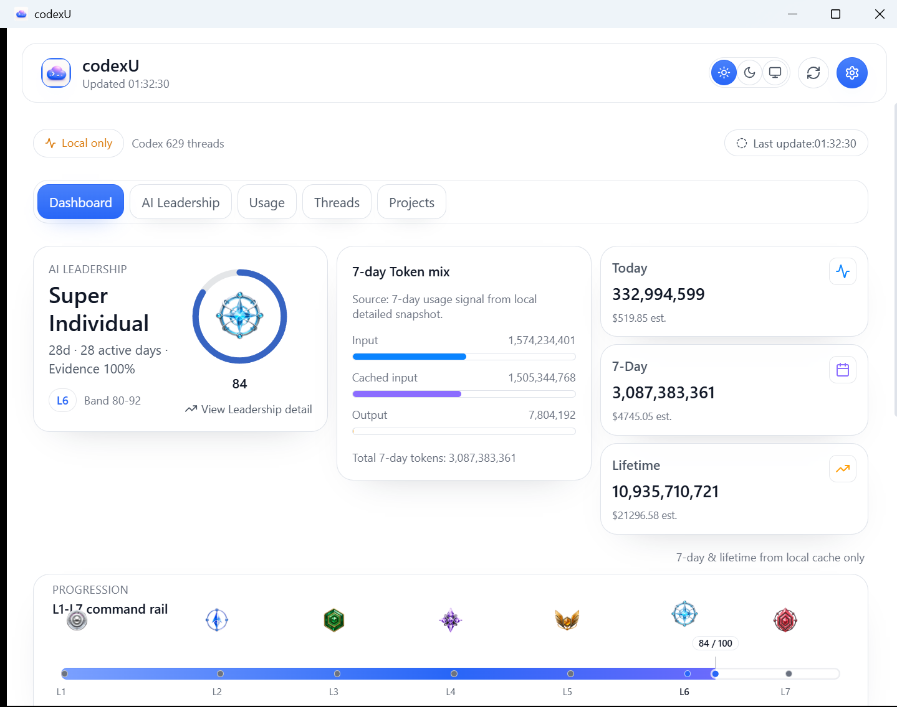
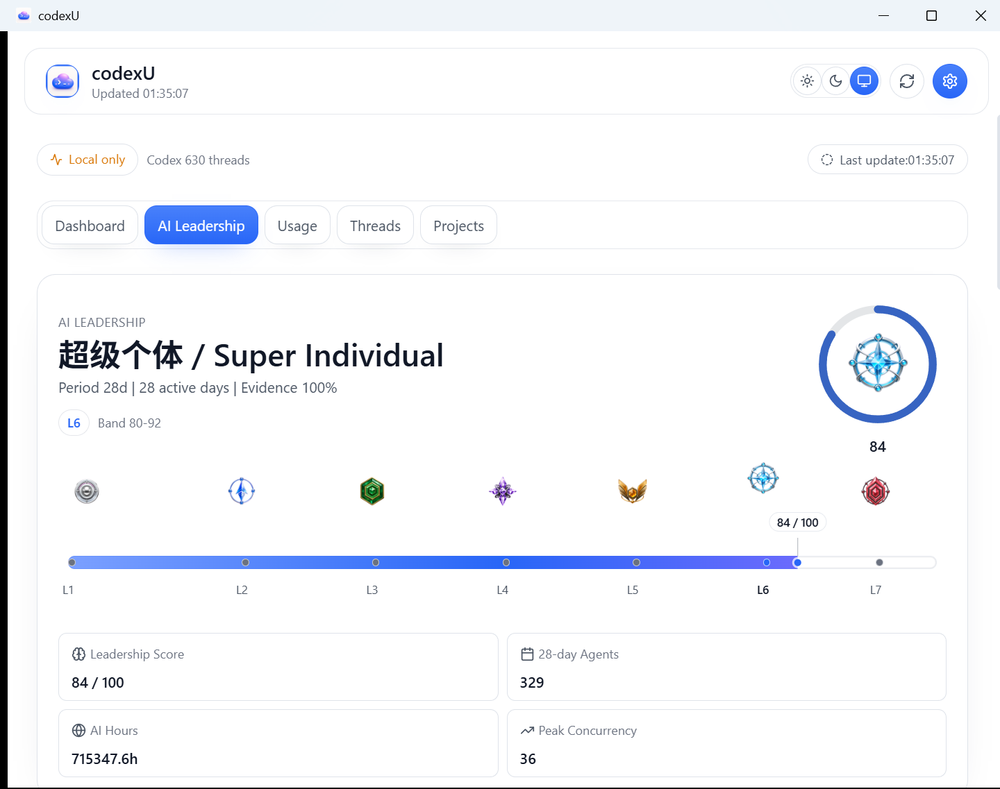
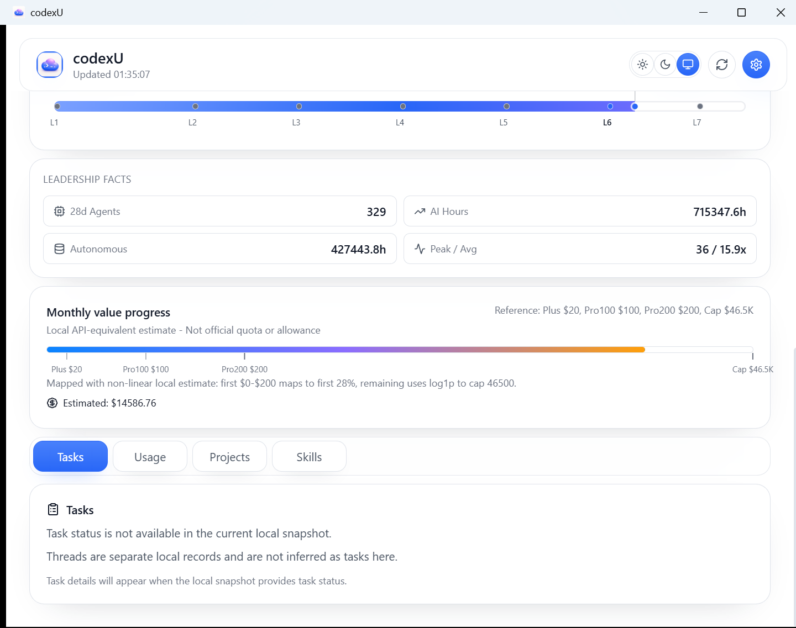
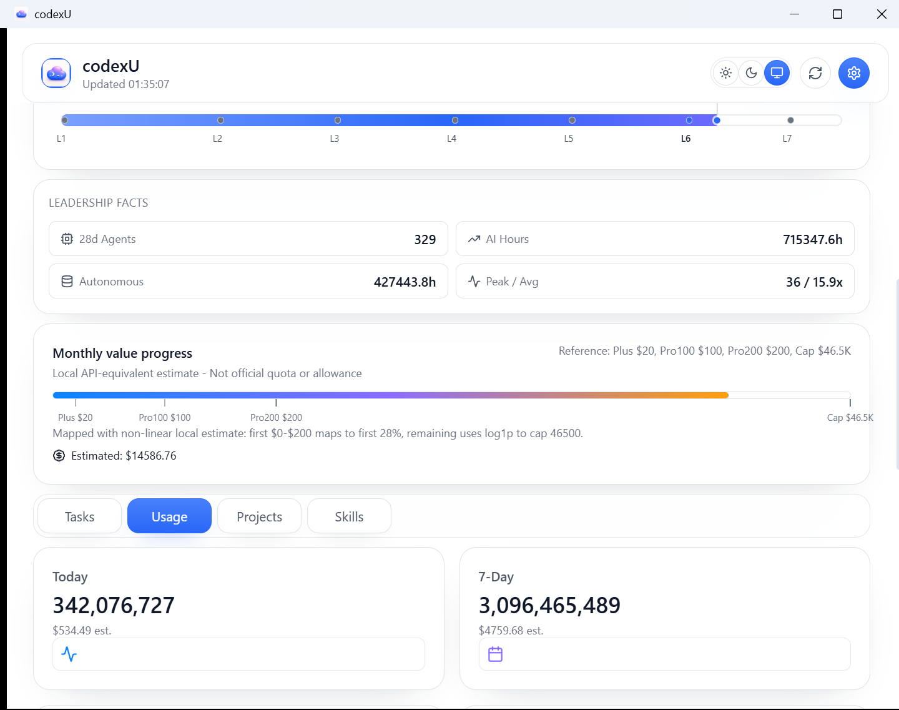
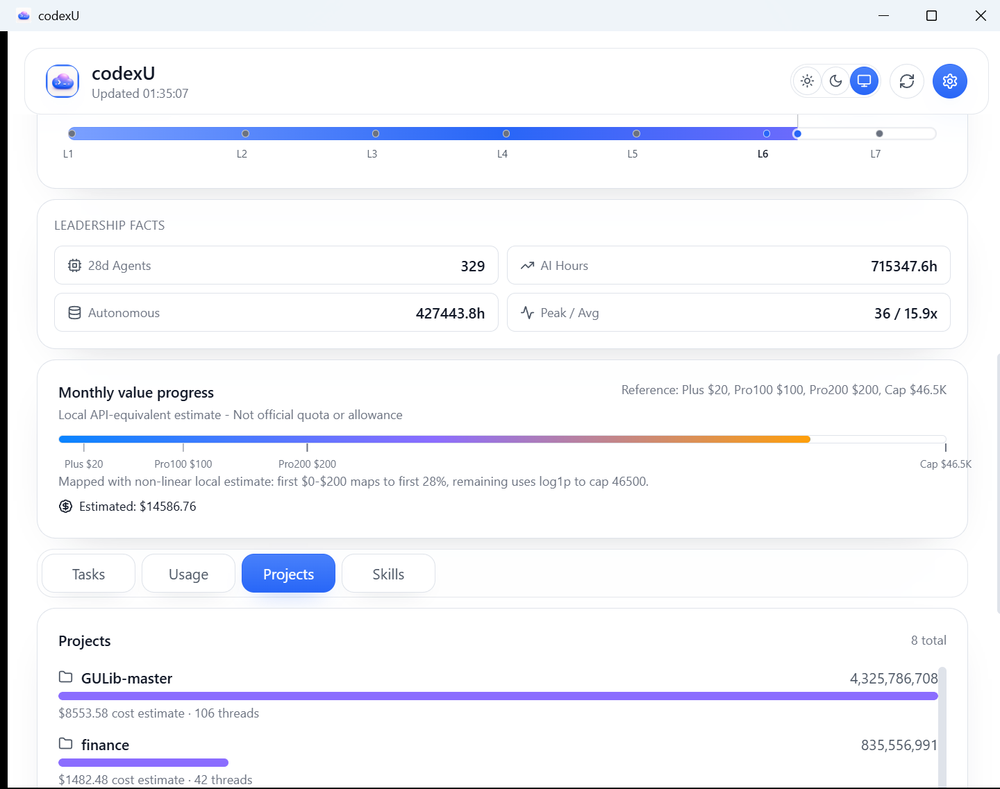
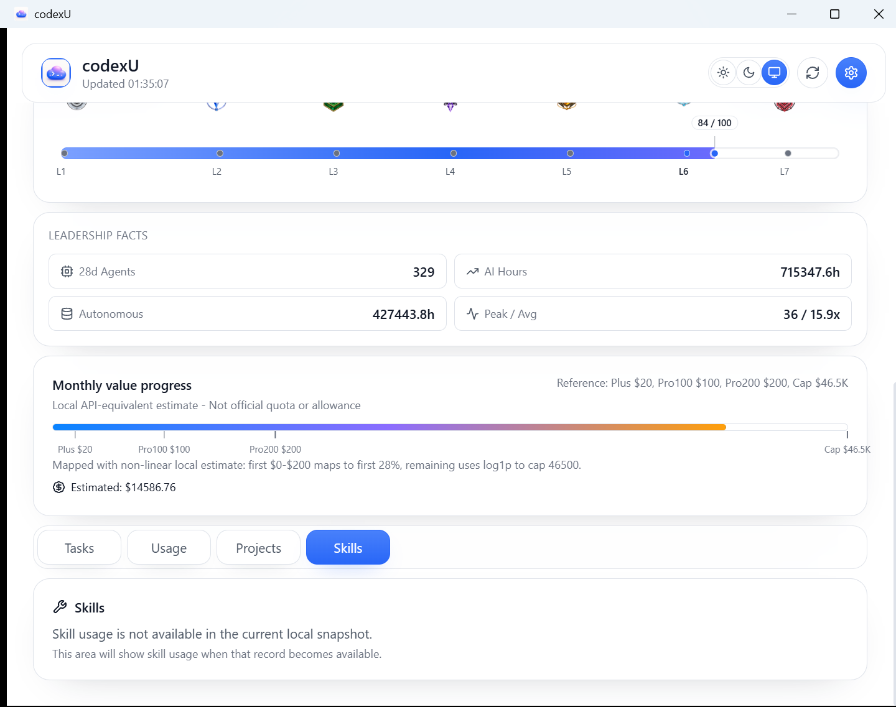

Windows Dashboard Showcase (Phase-4 UI)
Evidence date: 2026-07-28. Verdict: accepted for page-level Windows Dashboard hierarchy at the compact desktop target.
Evidence source: final native windows/target/release/codexu-tauri.exe.
What is aligned
- Fixed Dashboard: Leadership identity, local 7-day Token mix, Today / 7-day / Lifetime summaries, the full L1-L7 rail, and local Month value progress remain in the fixed Dashboard flow.
- Four variable lower panels: Tasks, Usage, Projects, and Skills are reachable from the lower tablist. Leadership remains the dedicated
AI Leadershipdetail surface rather than a fifth lower panel. - Leadership detail: identity, score, compact facts, and L1-L7 rail retain the semantic hierarchy of the macOS reference. Windows keeps light/system Liquid Glass presentation; it is not a dark macOS pixel replica.
{kind=link}
At the compact native capture target, the three fixed top groups are horizontal and the entire L1-L7 rail (title, badges, bar, and labels) is visible. The fixed top has no raw thread, project, or tool content. Its 7-day Token mix labels Input, Cached input, and Output without a duplicated count.
Native evidence
The capture batch used a target HWND with PrintWindow, not Computer Use. DWM bounds were 1439x1136 for the default Dashboard and 1440x1137 for the remaining five panels at DPI 144: approximately 960x758 CSS pixels, within one physical pixel of the batch target. The target release process was closed after capture (zero matching target processes remained).
{kind=link}

{kind=link}

{kind=link}

{kind=link}

{kind=link}

{kind=link}

Tasks, Usage, Projects, and Skills were captured after scrolling to the lower tablist. They prove those tab panels; they are not evidence that lower panels belong in the first viewport.
Data interpretation and retained differences
- 7-day Token mix: local telemetry only, not official quota, remaining allowance, rate-limit data, or an account bill.
- Month value progress: existing detailed-month
estimated_cost_usddrives a labelled local API-equivalent estimate. Milestones are Plus $20, Pro 100 $100, Pro 200 $200, with a $46.5K reference cap. The first $0–200 accounts for 28%; the remaining span uses alog1ptail. It is not an official allowance, quota, or bill; macOS pricing differs, so no strict dollar parity is claimed. - Tasks and Skills: UI shells are complete, while their data contracts remain blocked (no task-status model and no typed Skills-usage field). This is an evidence boundary, not a product-area absence claim.
- Usage and Projects: real local-data panels, but partial semantic matches because their data contracts and host UI differ from macOS.
- Privacy: the fixed top does not expose prompt text, response bodies, raw thread/project/tool records, paths, or tool arguments.
Validation record
| Check | Result | Scope note |
|---|---|---|
npm run build in windows/apps/codexu-tauri/web | pass | Final rerun completed successfully. |
cargo test --workspace in windows | pass | Final rerun: codexu_core 9/9; other targets and doc tests 0. |
cargo tauri build --no-bundle in windows/apps/codexu-tauri/src-tauri | pass at 01:55:04 | Final rerun produced windows/target/release/codexu-tauri.exe. |
git diff --check at repository root | pass | Final documentation/implementation diff has no whitespace errors. |
Computer Use is not an acceptance method for this batch: its Node runtime failed to initialize with os error 3. Native evidence is HWND-specific PrintWindow capture and visual review, not a substituted Computer Use pass.
Known limits
- No official quota/rate-limit reader, cache, IPC field, thread parser, points logic, or score calculation was changed in this work.
- No no-signal/no-data screenshot was captured for this batch.
- No pixel-diff was run; acceptance is hierarchy and compact-viewport usability, not pixel replication.
- Runtime values visible in screenshots are capture-time local values and are not asserted to equal macOS screenshot values.